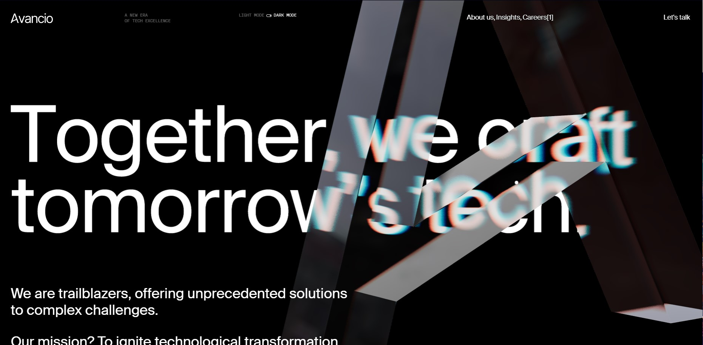

-
House of Dreamers
El efecto que hace el ratón al desplazarse por la pantalla esta muy logrado y le da un toque distintivo.
-
Avancio
Los elementos en 3D estas muy contruidos y funcionan muy bien en la página.
 -
Nahare
La paleta monocromatica es muy chula y como todas las fotos se consiguen entender, incluso con el uso de solo un color, me parece una idea atrevida.